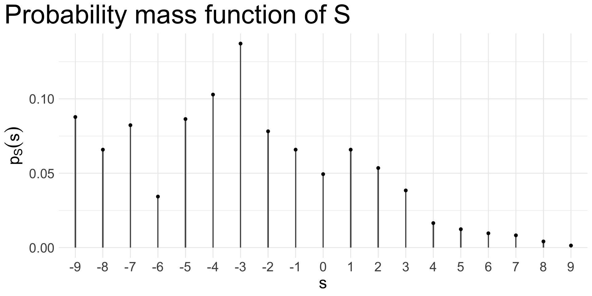
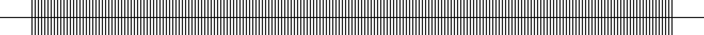

Lecture 3: Discrete Random Variables
STA237: Probability, Statistics, and Data Analysis I
Michael Jongho Moon
PhD Student, DoSS, University of Toronto
May 16, 2022
Example: Rock Paper Scissors
Suppose you play 3 rounds of
Rock Paper Scissors with a friend.
For each round,
if you win with a rock,
your friend pays you $1,
if with paper $2, and
if with scissors $3.
$1 $2 $3
When you lose with the hands, you pay the assigned amounts to your friend. When you hands are the same (tie), you both put $3 to a communal cash box. i.e., you both lose $3.
Assume both you and your friend randomly pick each hand and play the 3 rounds independently.
What is
the probability that
you win more than
$0 after the 3 rounds?
- Let’s denote the amount of dollars you win after \(i\)th round with \(X_i\) and \(S=X_1+X_2+X_3\).
- We are interested in \(P\left(\left\{S >0\right\}\right)\)
- \(S\) is an example of a random variable
\[S\left(\omega_1, \omega_2, \omega_3\right)\] for all \[\left(\omega_1, \omega_2, \omega_3\right)\in\Omega\]
\(S\) is an example of a discrete random variable.
- \(S\) maps each outcome in \(\Omega\) to a new sample space of numeric values, \(\left\{\cdots, -9, -8, \cdots, -1, 0, 1, \cdots\right\}\)
- \(S\) is a variable because it represents a number that may change
- \(S\) is random because the underlying sample space is random
- \(S\) is discrete because it takes a countable number of values
Defining discrete random variable
Discrete random variable
Let \(\Omega\) be a sample space. A random variable \(X\) is a function that maps \(\Omega\) on to real number (\(\mathbb{R}\)),
\[X:\Omega\to\mathbb{R}.\]
When a random variable \(X\) takes a countable number of values, it is called a discrete random variable.
Note that a discrete random variable may take an infinite number of values.
Probability distribution
We describe how random variables may behave with the set of possible values it can take and their relative likelihoods, or their distributions
For a discrete random variable \(X\), we can assign probabilities for each possible value as \[P\left(X=k\right)=P\left(\left\{\omega\in\Omega: X\left(\omega\right)=k\right\}\right).\]
A such function is called a probability mass function
Probability mass function
The probability mass function \(p\) of a discrete random variable \(X\) is the function
\[p:\mathbb{R}\to\left[0,1\right],\]
defined by
\[p(k)=P\left(X=k\right)\quad\quad\text{for }-\infty<k<\infty.\]
The probability function (pmf) uniquely defines (the behaviour of) a random variable.
Example: Rock Paper Scissors
To define the distribution of \(S\), we need …
\(\vdots\)
\(p_S(-9)=P(S=-9)\)
\(p_S(-8)=P(S=-8)\)
\(\vdots\)
\(p_S(9)=P(S=9)\)
\(\vdots\)
Cumulative distribution function
The cumulative distribution function, or distribution function \(F\) of a discrete random variable \(X\) is the function
\[F:\mathbb{R}\to\left[0,1\right],\]
defined by
\[F(a)=P\left(X\le a\right)\quad\quad\text{for }-\infty < a<\infty.\]
The distribution function (cdf) also uniquely defines (the behaviour of) a random variable.
Example: Rock Paper Scissors
To define the distribution of \(S\), we need …

\(\vdots\)
\(F_S(-9)=P(S\le-9)\)
\(F_S(-8)=P(S\le-8)\)
\(\vdots\)
\(F_S(9)=P(S\le 9)\)
\(\vdots\)
Properties of distribution functions
For any random variable \(X\),
- \(F(a)\le F(b)\) for any two values \(a\) and \(b\) such that \(a\le b\)
- \(F(a)\) is a probability, which implies
\[\lim_{a\to\infty}F(a) = \lim_{a\to\infty}P(X\le a) = 1\] \[\lim_{a\to-\infty}F(a)=\lim_{a\to-\infty}P(X\le a) = 0\]
- \(F\) is right-continuous. That is,
\[\lim_{\varepsilon\downarrow 0}F(a+\varepsilon) = F(a)\]
Common discrete distributions
Bernoulli distribution
A discrete random variable \(X\) has a Bernoulli distribution with parameter \(p\), \(0\le p\le 1\), if its probability mass function is given by
\[p_X(x)=\begin{cases} p & \text{when }x=1 \\ 1-p & \text{when }x=0.\end{cases}\]
We denote the distribution by \(\text{Ber}(p)\) and define the random variable by \(X\sim \text{Ber}(p)\).
Examples
\(Y=1\) when Michael answers a multiple choice question correctly and \(Y=0\) otherwise.
\(W_i=1\) when \(X_i>0\) and otherwise \(0\) from the Rock Paper Scissors example.
In general, we can model any experiment with two outcomes with Bernoulli random variables.
Example: Rock Paper Scissors
Suppose want ‘all-or-nothing’,
proposes a 5-round game, and
play only scissors.
Assume that your friend still plays randomly.
What is the probability that you would win more than $0 after the 5 rounds?
$3 $3 $3 $3 $3
Let \(W_i\) be the \(\text{Ber}(p)\) random variable representing whether you win round \(i\).
We can denote the number of rounds you win as \(N=W_1 + W_2 + W_3 + W_4 + W_5\). You need to at least 3 rounds to win more than $0.
\[P(N \ge 3)=1 - P(N < 3) = 1 - P(N \le 2) = 1 - F_N(2)\]
Let’s consider \(F_N(2)=p_N(0) + p_N(1) + p_N(2)\)
\(p_N(0) = P(N=0) = p_{W_1}(0)p_{W_2}(0)p_{W_3}(0)p_{W_4}(0)p_{W_5}(0)\)
\(p_N(1) = P(N=1)= p_{W_1}(1) p_{W_2}(0) p_{W_3}(0) p_{W_4}(0) p_{W_5}(0)\) +\(p_{W_1}(0) p_{W_2}(1) p_{W_3}(0) p_{W_4}(0)p_{W_5}(0) +\cdots\)
\(p_N(2) = P(N=2)= p_{W_1}(1) p_{W_2}(1) p_{W_3}(0) p_{W_4}(0) p_{W_5}(0)\) +\(p_{W_1}(1) p_{W_2}(0) p_{W_3}(1) p_{W_4}(0)p_{W_5}(0) +\cdots\)
How about for 10 rounds? How about any \(N\) rounds?
Counting
Permutation
1 | 2 | 3 | 4 | … | \(N\)
Counting the number of ways to win \(n\) round(s) out of \(N\) is equivalent to
the number of ways to choose \(n\) items out of \(N\) without a replacement.
- Let us first consider the number of ways to arrange in order \(n\) items out of \(N\)
- For the first choice, we have \(N\) options to choose from
- For the second choice, we have \(N\) options
- For the \(n\)th choice, we have \(N-n+1\) options
- Thus, in total, we have
\[N\times(N-1)\times(N-2)\cdots(N-n+1)\]
Any ordered sequence of \(n\) objects taken from a set of \(N\) distinct objects is called a permutation. The number of possible permutations of size \(n\) from \(N\) objects is
\[P_{n,N} = \frac{N!}{(N-n)!}.\]
Combination
- In the Rock Paper Scissors example, there is only one order the rounds appear
- For example, there is only one way to win the first and second round; you can’t win the second round then win the first round
- To compensate for “over-counting” in permuation, we divide by the number of ways to arrange \(n\) items in order
Any unordered set of \(n\) objects taken from a set of \(N\) distinct objects is called a combination. The number of possible combinations of size \(n\) from \(N\) objects is
\[{N \choose n}=\frac{N!}{(N-n)! \cdot n!}.\]
Binomial distribution
A discrete random variable \(X\) has a binomial distribution with parameters \(n\) and \(p\), \(n = 1, 2, 3, \ldots\), and \(0\le p \le 1\), if its probability mass function is given by
\[p_X(x)=\binom{n}{x}p^x(1-p)^{n-x} \quad\quad \text{for all }x=0, 1, 2, \ldots, n.\]
We denote the distribution by \(\text{Bin}(n,p)\).
- It’s important to remember the total number of objects, or often referred to as trials, \(n\) is a fixed parameter as well as \(p\)
- The distribution describes a sum of \(n\) independent and identical Bernoulli trials
- \(N\sim\text{Bin}(5, 1/3)\) from the ‘all-or-nothing’ Rock Paper Scissors example
Geometric distribution
A discrete random variable \(X\) has a geometric distribution with parameter \(p\), \(0 < p \le 1\), if its probability mass function is given by
\[p_X(x)=(1-p)^{x-1}p\quad\quad\text{for } x=1,2,\ldots.\]
We denote this distribution by \(\text{Geo}(p)\).
- It’s often used to model the number of trials until the first success
- Or, the number of independent Bernoulli trials until the event occurs
Poisson distribution
Suppose an interval consists of an infinite number of independent and idential Bernoulli trials.

- A Poisson random variable describes the number of events in an interval
- Similar to a binomial random variable, it describes a count of events but doesn’t have a fixed number of trials
- The distribution is instead defined with a rate parameter \(\lambda\)
A discrete random variable \(X\) has a Poisson distribution with parameter \(\lambda\), \(\lambda > 0\), if its probability mass function is given by
\[p_X(x)=\frac{e^{-\lambda}\lambda^x}{x!}\quad\quad\text{for }x=0,1,2,\ldots.\]
We denote the distribution by \(\text{Pois}(\lambda)\).
Poisson process assumptions
- The probability of one event occurring in a short sub-interval is proportional to the length of the interval
- The occurrence of one event does not affect the probability of other events occurring
- Two events cannot occur simultaneously, but occur at very small sub-intervals
(Dekking et al. Exercise 12.1)
Which of the following examples would
reasonably suit the Poisson process assumptions?
- The times of bankruptcy of enterprises in the United States
- The times a chicken lays its eggs
- The times of airplane crashes in a worldwide registration
- The locations of wrongly spelled words in a book
- The times of traffic accidents at a crossroad
Example: Customer arrival
(Dekking et al. Exercise 12.2)
The number of customers that visit a bank on a day is modeled by a Poisson distribution. It is known that the probability of no customers at all is 0.00001. What is the expected number of customers?
Practice questions
- Exercises from Dekking et al. Chapter 4: All
- Quick Exercises 4.6 from Dekking et al. (p. 49)
Simulation in R worksheet
- Follow this link to open the worksheet
© 2022. Michael J. Moon. University of Toronto.
Sharing, posting, selling, or using this material outside of your personal use in this course is NOT permitted under any circumstances.